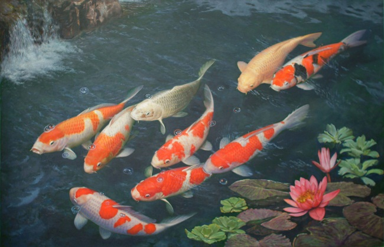
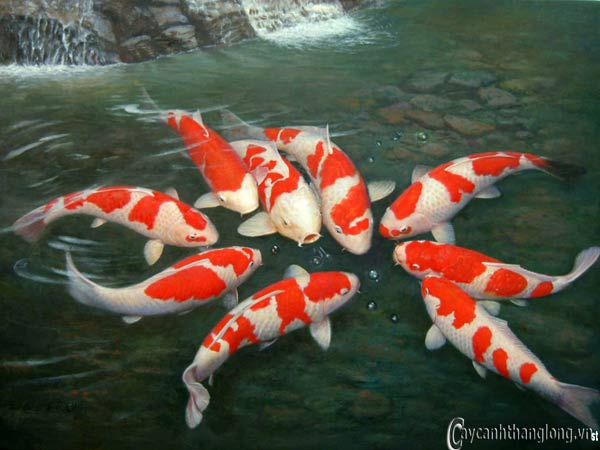

<!-- ##### Our Products Area Start ##### -->
<section class="our-products-area section-padding-100" style="padding-top:unset; padding-bottom: unset;">
    <div class="container">
        <div class="row">
            <div class="col-12">
                <!-- Section Heading -->
                <div class="section-heading text-center">
                    <p>Giới thiệu</p>
                    <h2><span>Thông tin về KOIFS</span> </h2>
                    
                </div>
            </div>
        </div>

        <div class="row">
            <div class="row">
                <div class="col-12">
                    <p>
                        Hiện nay, thị trường cá cảnh đang phát triển rất mạnh và đa dạng về nhiều chủng loại, trong đó cá Koi Nhật đang là loài được khá nhiều người quan tâm và chọn làm thú nuôi cho mình bởi chúng thể hiện được sự độc đáo về màu sắc với nhiều kích cỡ khác nhau,
                        từ đó thu hút được người nuôi cá cảnh cả nước nói chung. Tuy nhiên điều khiến cho mọi người cảm thấy lo lắng đó chính là chọn mua giống nuôi có đúng với chất lượng hoặc cam kết là cá được nhập từ Nhật hay không?. Thấu hiểu được
                        điều đó nên Cá Koi KOIFS đã được hình thành và đây cũng chính là nơi đảm bảo cung cấp đến bạn nhiều giống loại cá Koi đúng chất lượng của Nhật.
                    </p>
                    

                    <p style="margin-top: 1rem;">
                        Cá Koi KOIFS cung cấp nhiều giống cá quý như: Cá Koi Ai Goromo, Cá koi Kin Gin Rin, Cá Koi Ki Utsuri, Cá Koi Doitsu Sanke,Cá Koi Utshuri, Cá Koi Tancho, Cá Koi Taisho Sanke, Cá Koi Showa Sanshoku, Cá koi Showa Goromo, Cá koi Kohaku, Cá Koi Goshiki, Cá
                        Koi Asagi,.. Nhiều khách hàng có thắc mắc tại sao lại cá Koi lại có nhiều tên gọi khác nhau như vậy? Thật ra những cách gọi này được bắt nguồn từ người Nhật, và họ đặc tên cá dựa trên sự khác biệt về hoa văn của thân, kiểu vây
                        hoặc kiểu đuôi, từ đó cá có nhiều tên gọi để phân biệt.
                    </p>
                    <p>
                        Cá Koi KOIFS là nơi cung cấp cho bạn nhiều giống cá Koi đạt chất lượng được nhập khẩu trực tiếp từ Nhật, chúng có nhiều màu sắc khác nhau như trắng, đỏ, đen, vàng, cam,.. tùy thuộc vào nhu cầu của quý khách mà bạn có thể chọn nuôi một giống cá cho phù
                        hợp nhất. Đến với Cá Koi KOIFS quý khách sẽ được tư vấn đầy đủ các thông tin về cách thức chọn lựa giống, cách nuôi cá hoặc cách chăm sóc, xử lý khi cá gặp vấn đề,..
                    </p>
                    <p> Bên cạnh đó, trong quá trình nuôi sẽ tùy môi trường cá sẽ có những biểu hiện bất thường, website sẽ cung cấp thông tin các loại bệnh và khách hàng truy cập website sẽ tra cứu các triệu chứng của bệnh để tìm ra phương pháp và liệu trình
                        điều trị phù hợp.
                    </p>
                    

                    <p style="margin-top: 1rem;">
                        Bên cạnh cung cấp cho quý khách hàng những giống cá Koi tốt nhất, khỏe mạnh nhất thì Cá Koi KOIFS còn không ngừng cung cấp những thông tin cần thiết về cẩm nang nuôi cá Koi, quý khách có thể vào trực tiếp hệ thống website: <b style="color: red; font-style: italic ;">cakoinhat.com</b>                        để theo dõi thường xuyên, hoặc có thể liên hệ trực tiếp cùng chúng tôi để được tư vấn cụ thể và tận tình nhất mọi thông tin mà bạn cần biết về cá Koi. Ngoài ra chúng tôi cung cấp cá Koi với mức giá hấp dẫn nhất do đó quý khách
                        hàng có thể an tâm khi chọn lựa cơ sở cung cấp cá Koi của chúng tôi.
                    </p>
                    <h5>
                        Thông tin liên hệ tư vấn
                    </h5>
                    <h4>
                        CÁ KOI KOIFS
                    </h4>
                    <ul>
                        <li>
                            Địa chỉ: Đường 3 tháng 2, Phường Xuân Khánh, Ninh Kiều, Cần Thơ
                        </li>
                        <li> Điện Thoại: +84 223 9000</li>
                        <li> Email: cakoiKOIFS@gmail.com</li>
                    </ul>
                </div>
            </div>
        </div>
    </div>
</section>
<!-- ##### Our Products Area End ##### -->